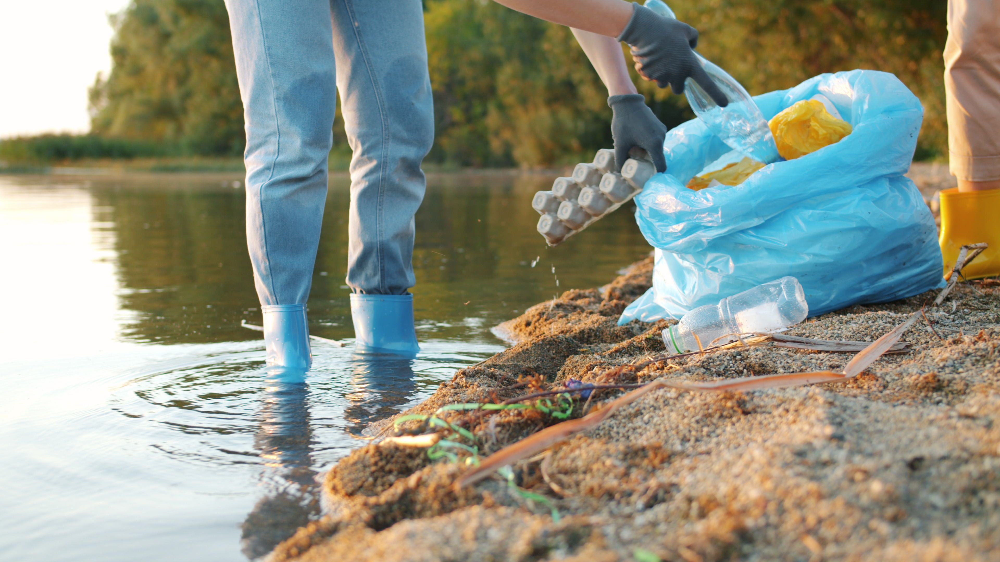
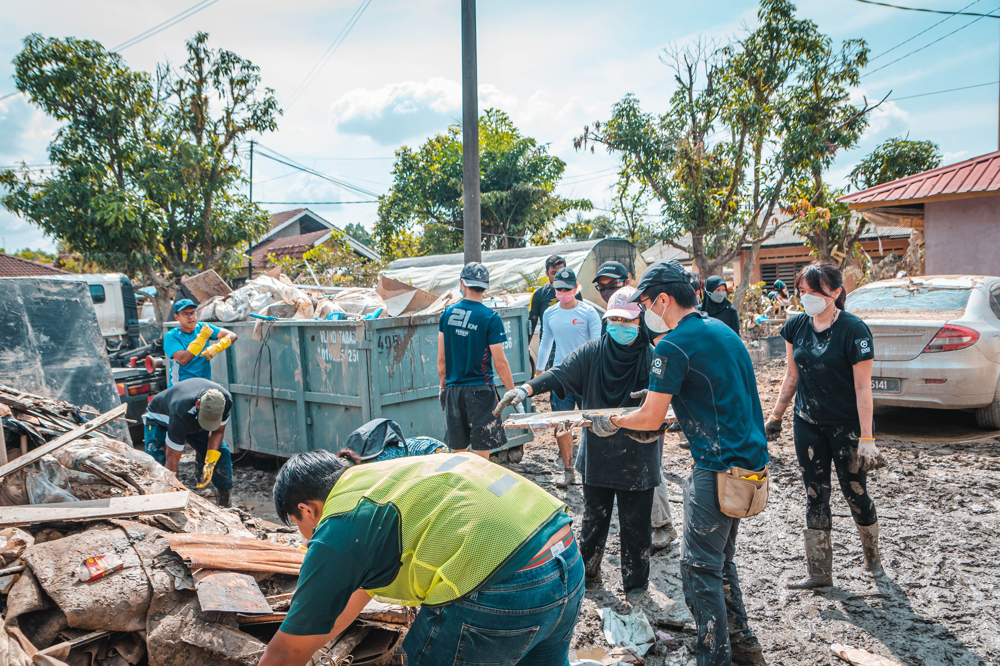

Gunakan Air Secukupnya
Hemat air dalam setiap aktivitas. Tutup keran saat tidak digunakan agar air tidak terbuang sia-sia.
SDG 6 - Air Bersih dan Sanitasi Layak
Air bersih adalah bagian penting dari kehidupan. Mari menjaga sumber air demi masa depan yang lebih baik.
Pelajari Lebih LanjutMulai dari Langkah Kecil
Kita semua bisa berkontribusi untuk menjaga air bersih. Mulai dari hal kecil yang bisa dilakukan setiap hari.
Hemat air dalam setiap aktivitas. Tutup keran saat tidak digunakan agar air tidak terbuang sia-sia.

Jangan membuang sampah atau limbah sembarangan agar sungai, danau, dan laut tetap bersih.

Lindungi sungai, mata air, dan lingkungan sekitarnya agar sumber air tetap terjaga untuk masa depan.

Ajak keluarga dan masyarakat untuk menjaga kebersihan lingkungan serta menggunakan air secara bijak.
Bersama Jaga Air Bersih
Kebersihan air hari ini menentukan kesehatan dan masa depan generasi berikutnya.